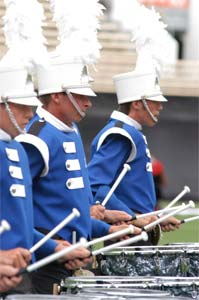

2004 Capital Regiment Program
The Capital Regiment Drum and Bugle Corps is proud to announce its show for 2004 entitled “A Celebration of Life: Mind, Body, and Spirit.”
The program will feature the music of David Holsinger, and includes excerpts from “Ballet Exaltare”, “Homage: Three Tapestries”, and “Scootin’ on Hardrock.”
The show begins with three separate trumpet choirs stating the familiar ”Old Hundredth” hymn by Alan Bourgeois. Three guard soloists depicting each of the show elements: “Mind, Body, and Spirit”, will accompany each trumpet choir, and will give a glimpse of what is to follow. When the final phrase of “Old Hundredth” is stated in unison, the Life character is introduced. This soloist represents a culmination of the three elements, and will be featured each time the opening melody is stated. This unifying thread weaves its way throughout the entire program.
Following the introduction, “Ballet Exaltare” will provide the impetus for our journey into the “Mind.” Drill designer Jeff Sacktig’s complex visual design will help compliment the dense musical textures of brass arranger Jay Bocook. Watch for this exciting and fast paced opener.
The ballad, the second movement from “Homage: Three Tapestries”, will serve as a striking contrast to the opening production. A gorgeous melody with large expressive strokes will set the stage for a full corps treatment of the “Body.” Listen for the metallic colors by the full percussion section.
The third production is entitled “Scootin’ on Hardrock.” Its driving rhythms and pulsating grooves will help lay the foundation for our treatment of “Spirit.” This exhilarating selection will depict the sheer joy and exuberance of the human spirit. Fast paced drill matched to scorching brass and percussion licks will bring this production to a heated climax.
The final portion of the program is entitled “A Celebration of Life” and is a recapitulation of the three elements: “Mind, Body and Spirit.” As we reach the final climax, the three elements will be blended into one as the familiar “Old Hundredth” returns in a triumphant maestoso. A final presto will drive the program to an exciting conclusion.
On The Web